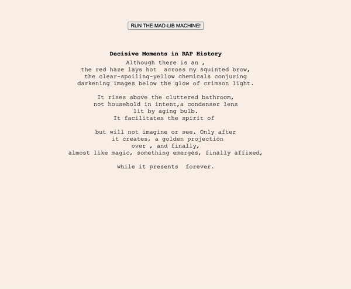
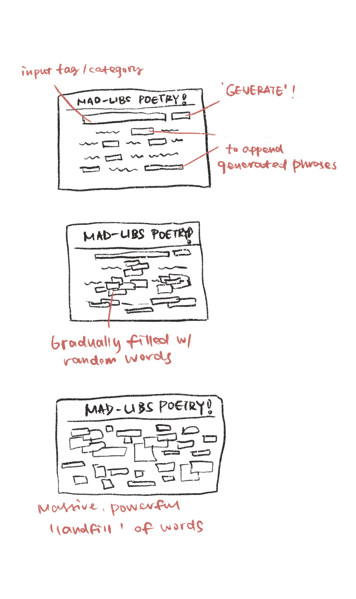
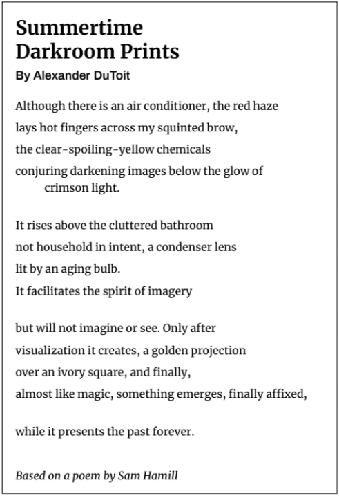
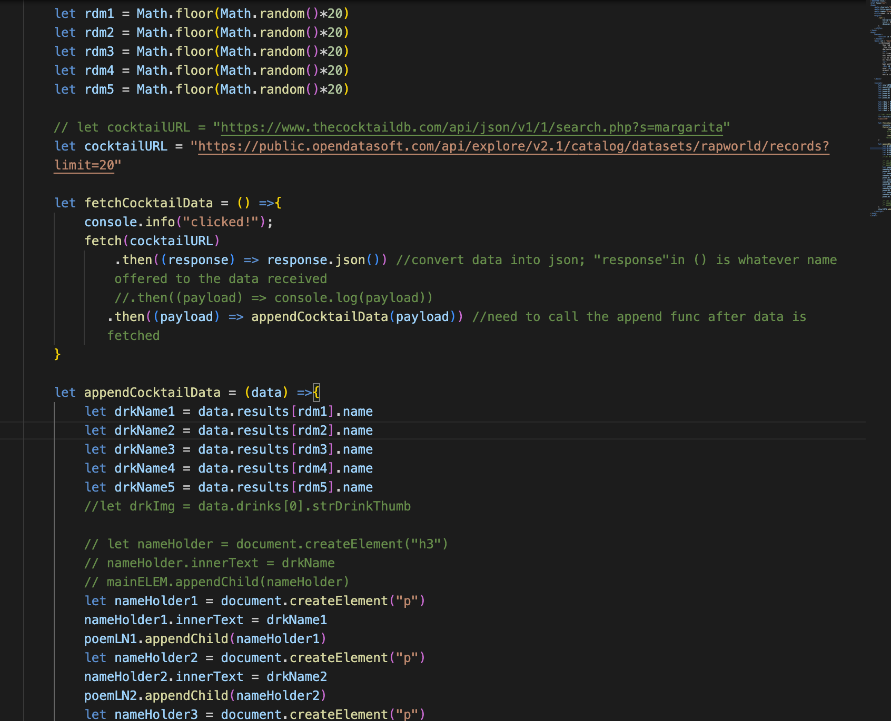
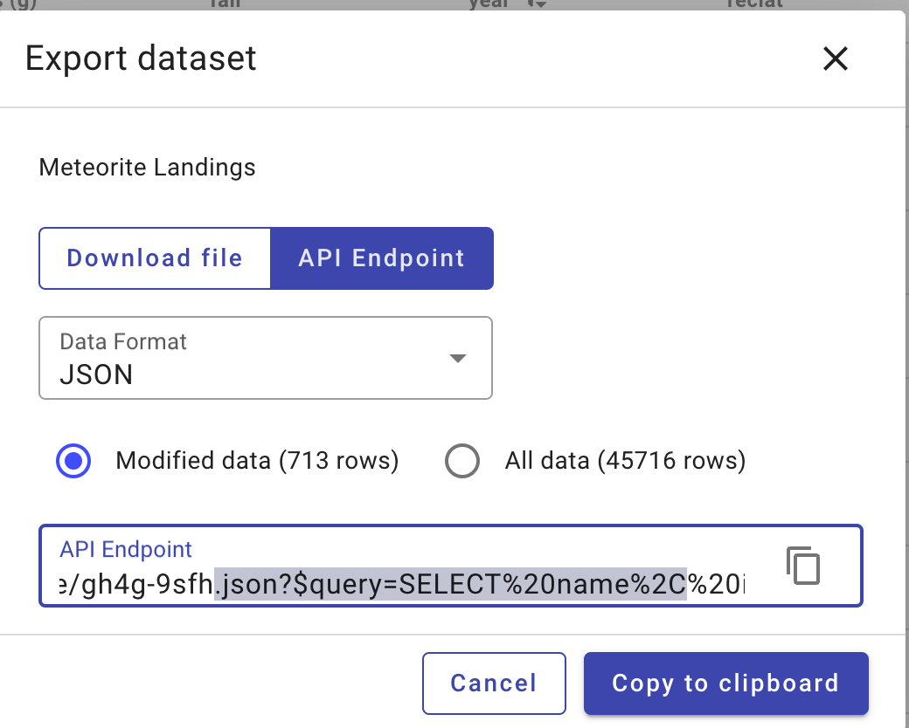
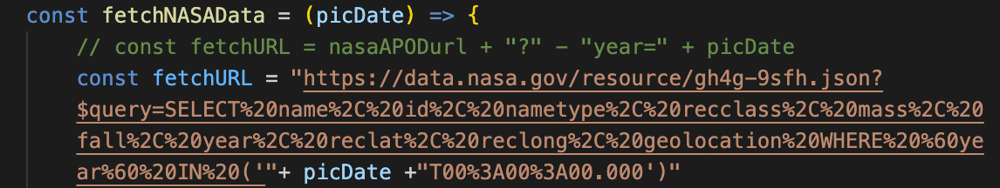

Project 1: API
try the Decisive Moments in RAP History by clicking the gif
1. Interesting API Findings
#1 NASA Meteorite Landing Database
NASA has been kept updating data about meteorite landings throughout the human history in its Meteorit-Landing Open Data Portal. The database contains information about all the meteorite landings throughout history.
#2 Rap World Artist
The Rap World Artist dataset contains information about 581 rappers/rap groups/other artists in the rap area, and had a visualization based on the where they grew up or the place that has significant impact to them.
I found it interesting to see how diverse and how enormous that APIs can contain. And a lot of freedom and blank space could be filled and played with among different categories. Therefore, what if we view the variety of APIs as a whole and play with its massiveness, power, lengthiness, and density.
That is to say, I would like to create a ridiculous interactive game based on the format of Mad-Libs poems, where people can keep generating random words coming from various APIs. People can set the category or the tag of the words they would like to generate. The more number of words one tries to generate, the more chaotic the page would become. And finally, the poem would become a messy bunch of words filled with hilarious but ridiculous phrases.
2. Diagram
3. Development
I started the development by implementing the poetry Summertime Darkroom Prints by Alexander DuToit and randomly deleting some of the nouns and items in the content. The atmosphere of the peom is calm and chill, which I believe can create a contrast with the rapper information
Following the in-class demo, I filtered the rapper's name and passed them into the blanks I created with divs in line.
The first API connection went pretty smooth, while I got some problems while connecting the second one - the NASA Meteorite Dataset. The API link offered by NASA was long and hard to disassemble into individual parts, and they do not have open documentation for the API.
One way that Elise suggested was to find the exact part of the info I would like to filter and adjust it in code. As a result, I manually identity the part of "$Time" and changed it into the variable from the first API.
This was a poor solution but it is efficient in terms of the situation that I only have one API that need to be dealed specially. So I really appreciated it.
4. Future Possibilities
To randomize the functionality, regular expression could be one way to identify different blank spaces and implement various API output inside.